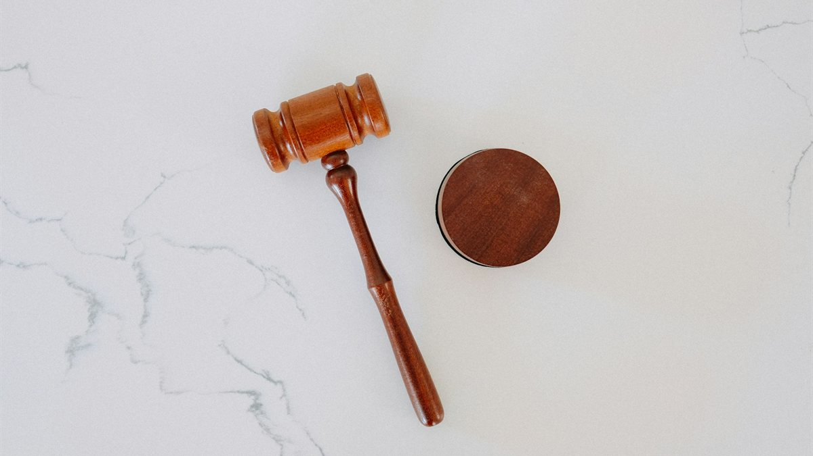

İş Hukuku
İşçi ve işveren arasındaki uyuşmazlıklarda, arabuluculuktan dava sonuna kadar haklarınızı koruyoruz.

İş ilişkisinin sona ermesi çoğu zaman hem maddi hem manevi açıdan zor bir süreçtir. Kıdem ve ihbar tazminatı, ödenmemiş ücretler ya da haksız fesih gibi konularda haklarınızı doğru bilmek ve kanuni sürelere uymak büyük önem taşır.
Büromuz, işçi müvekkilleri adına tazminat ve alacak taleplerini, işveren müvekkilleri adına ise iş sözleşmeleri, fesih süreçleri ve davaların takibini yürütür. Dava açmadan önce zorunlu olan arabuluculuk aşamasında da müvekkillerine eşlik eder.
Bu alandaki hizmetlerimiz
Kıdem ve İhbar Tazminatı
Fesih sonrası tazminat haklarının hesaplanması ve talep edilmesi.
İşe İade Davaları
Geçerli bir sebep olmadan yapılan fesihlere karşı işe iade süreçleri.
İşçilik Alacakları
Ödenmeyen ücret, fazla mesai, yıllık izin ve hafta tatili alacakları.
İş Kazası Tazminatı
İş kazası ve meslek hastalığından doğan maddi ve manevi tazminat davaları.
Arabuluculuk Süreçleri
Dava şartı olan arabuluculuk görüşmelerinde temsil ve anlaşma metinleri.
İşverenlere Danışmanlık
İş sözleşmeleri, fesih prosedürü ve işyeri uygulamalarında önleyici destek.
Süreç nasıl işler?
- Belgelerin incelenmesiİş sözleşmesi, bordrolar, fesih bildirimi ve SGK kayıtları incelenir; alacak kalemleri belirlenir.
- ArabuluculukKanunen zorunlu olan arabuluculuk başvurusu yapılır ve görüşmelerde haklarınız savunulur.
- DavaArabuluculukta anlaşma sağlanamazsa iş mahkemesinde dava açılır.
- TahsilKarar sonrası alacağın tahsili için gerekirse icra takibi başlatılır.
Sık sorulan sorular
Kıdem tazminatı almak için hangi şartlar gerekir?
Kural olarak aynı işverene bağlı olarak en az bir yıl çalışmış olmak ve iş sözleşmesinin kanunda sayılan hâllerden biriyle sona ermesi gerekir. İşverenin haklı bir neden olmaksızın feshi, işçinin haklı nedenle feshi, askerlik ve emeklilik bu hâllerdendir.
İşten çıkarıldım, dava açmadan önce ne yapmalıyım?
Kıdem-ihbar tazminatı, işçilik alacakları ve işe iade taleplerinde dava açmadan önce arabulucuya başvurmak zorunludur. İşe iade için arabulucuya başvuru süresi, fesih bildiriminin tebliğinden itibaren bir aydır.
Kıdem tazminatı alacağı ne zaman zamanaşımına uğrar?
Kıdem tazminatı, ihbar tazminatı, ücret ve yıllık izin ücreti alacakları için zamanaşımı süresi kural olarak beş yıldır. Süre, iş sözleşmesinin sona ermesinden itibaren işlemeye başlar.
Tazminatımı nasıl hesaplayabilirim?
Yaklaşık bir hesap için Kıdem ve İhbar Tazminatı Hesaplama aracımızı kullanabilirsiniz. Kesin tutar; giydirilmiş ücret, çalışma süresi ve fesih şekline göre değişeceğinden dosyanızın incelenmesi gerekir.